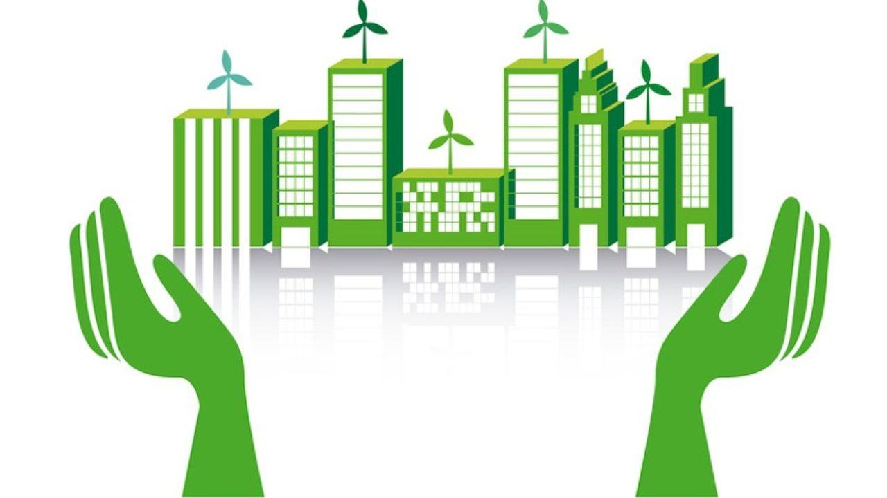

Bienvenidos
Somos encargados de administrar los recursos naturales renovabbles y el ambiente, generando desarrollo sostenible en el área de su jurisdicción. Propende por la satisfacción de sus grupos de interé, sin distinción de etnia, ubicación geografica o condición social, a trabéz de los servicios de calidad que involucran la mejora continua.